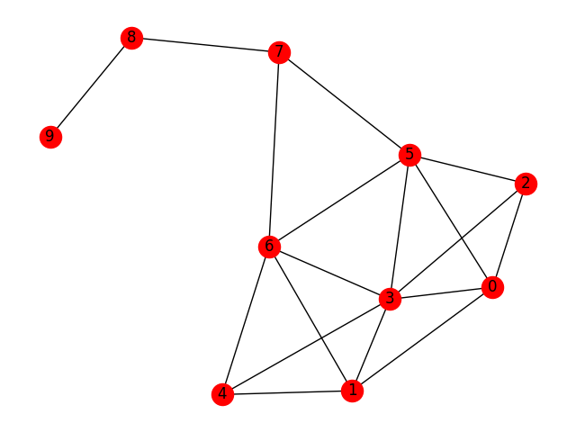
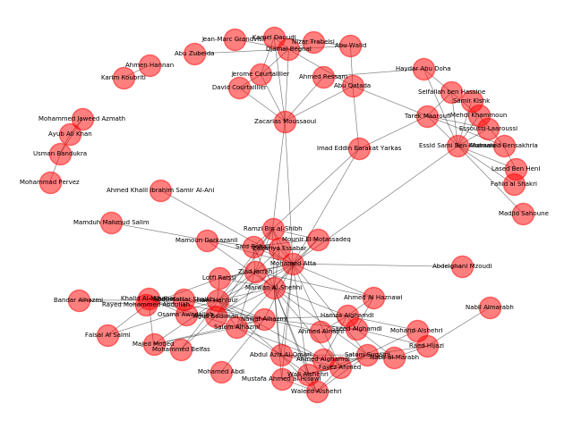

Cizit Analizi (Graph Analysis)
import networkx as net
import networkx.generators.small
g = networkx.generators.small.krackhardt_kite_graph()
print g.number_of_edges()
net.draw(g,with_labels=True)
plt.savefig('net1.png')
18

print net.betweenness_centrality(g)
{0: 0.023148148148148143, 1: 0.023148148148148143, 2: 0.0, 3:
0.10185185185185183, 4: 0.0, 5: 0.23148148148148148, 6:
0.23148148148148148, 7: 0.38888888888888884, 8: 0.2222222222222222, 9: 0.0}
print net.pagerank(g)
{0: 0.10191966963648949, 1: 0.10191966963648949, 2: 0.07941791239513805, 3:
0.14714751310196444, 4: 0.07941791239513805, 5: 0.12890718095072973, 6:
0.12890718095072973, 7: 0.09524765350111204, 8: 0.08569580310655242, 9:
0.05141950432565652}
cliques = list(net.find_cliques(g))
print cliques
[[8, 9], [8, 7], [3, 0, 1], [3, 0, 2, 5], [3, 4, 1, 6], [3, 6, 5], [7, 5,
6]]
import triadic
census, node_census = triadic.triadic_census(g)
print census
{'201': 24, '021C': 0, '021D': 0, '210': 0, '120U': 0, '030C': 0, '003':
22, '300': 11, '012': 0, '021U': 0, '120D': 0, '102': 63, '111U': 0,
'030T': 0, '120C': 0, '111D': 0}
import csv ## we'll use the built-in CSV library
import networkx as net
in_file=csv.reader(open('9_11_edgelist.txt','rb'))
g=net.Graph()
for line in in_file:
g.add_edge(line[0],line[1],weight=line[2],conf=line[3])
for n in g.nodes_iter(): g.node[n]['flight']='None'
attrb=csv.reader(open('9_11_attrib.txt','rb'))
for line in attrb:
g.node[line[0]]['flight']=line[1]
net.draw(g,with_labels=True,font_size=5,width=0.5,alpha=0.5)
plt.savefig('net2.png')

Kaynaklar
[1] Kouznetsov, Social Network Analysis for Startups
Yukarı